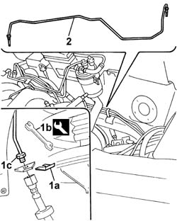

3340B56 RIGID PIPE from hydraulic CONTROL UNIT to RIGHT FRONT BRAKE - R.R.
- Path
- Procedures > 33 BRAKES > 3340 A(B.S. ANTI-LOCK BRAKING SYSTEM .) > 3340B abs system pipes > 3340B56 RIGID PIPE from hydraulic CONTROL UNIT to RIGHT FRONT BRAKE - R.R.
- Kind
- repair procedure (removal / refitting; the operation number is the code)
- Applies to
- all engines; all production periods
- Interactive page
- https://sloeber94.github.io/elrnDB-fDbl/en/#/2584693
Applies to: all engines; all production periods
 Removing
Removing
 Refitting
RefittingPlace the car on a lift.
Op. 7055B54 PROTECTION/GUARD UNDER ENGINE - R.R..
Op. 5530B52 BATTERY SUPPORT/DRIP TRAY - R.R..
Op. 3330C41 BRAKE FLUID RESEVOIR CAP - R.R. FOR VERSIONS WITH ABS.
Draw off fluid from the reservoir using a syringe.
Op. 3340A12 ABS HYDRAULIC AND ELECTRONIC CONTROL UNIT - R.R..
Op. 3340A13 A.B.S. CONTROL UNIT SUPPORT - R.R..
Op. 3330C30 BRAKE FLUID RESERVOIR - R + R AND WASH INSIDE.
Op. 3330D02 BRAKE SERVO/BRAKE PUMP ASSEMBLY - R.R..
Op. 4450B04 RIGHT FRONT WHEEL - R.R..
1. Remove retaining clip (1a) and use tool (1b) to undo the right front brake pipe connector (1c).
 | Name | Country |
|---|---|---|
1b | Box wrench for brake fittings | 1.856.132.000 |
2. Release the right front brake pipe from the retaining brackets on the engine bay/passenger compartment bulkhead and remove the pipe.

Applies to: all engines; all production periods
Refitting
RemovingFit the new rigid pipe and secure to the bulkhead between engine bay and passenger compartment using brackets.
Screw the rigid pipe fitting onto the hose and tighten using a wrench. Then do up the brake pipe retaining clip.
| Name | Country |
|---|---|---|
- | Box wrench for brake fittings | 1.856.132.000 |
 | Fastening | Component | Ø | Value (daNm) |
|---|---|---|---|---|
- | Connector | PIPE FROM CONTROL UNIT TO FRONT BRAKES | M10 x 1 | 1.4 |
Op. 4450B04 RIGHT FRONT WHEEL - R.R..
Op. 3330D02 BRAKE SERVO/BRAKE PUMP ASSEMBLY - R.R..
Op. 3330C30 BRAKE FLUID RESERVOIR - R + R AND WASH INSIDE.
Op. 3340A13 A.B.S. CONTROL UNIT SUPPORT - R.R..
Op. 3340A12 ABS HYDRAULIC AND ELECTRONIC CONTROL UNIT - R.R..
Op. 5530B52 BATTERY SUPPORT/DRIP TRAY - R.R..
Op. 0010T64 BRAKE AND/OR CLUTCH FLUID CHECK LEVEL AND TOP UP AS NECESSARY.
Op. 0010T65 HYDRAULIC BRAKE SYSTEM - BLEED AIR.
Op. 0010T66 EXTRAS FOR VERSIONS WITH ABS FOLLOWING OPERATION 0010T65.
Op. 3330C41 BRAKE FLUID RESEVOIR CAP - R.R. FOR VERSIONS WITH ABS.
Op. 7055B54 PROTECTION/GUARD UNDER ENGINE - R.R..
Remove the car from the lift.
Topics linked from this page (12)
- 0010T64 brake and or clutch fluid check level and top up as necessary
- 0010T65 hydraulic brake system bleed air
- 0010T66 manual gearbox oil check level and top up if necessary
- 3330C30 brake fluid reservoir - r + r and wash inside
- 3330C41 brake fluid resevoir cap - r r for versions with abs systems
- 3330D02 brake servo/brake pump assembly - r r
- 3340A12 A'B.S. system. - electronic and hydraulic CONTROL UNIT R.R.
- 3340A13 abs central mount - r r
- 4450B04 right front wheel r r
- 5530B10 battery - r+r
- 5530B52 Battery DRIP TRAY/SUPPORT - R.R.
- 7055B54 under-engine guard - r r